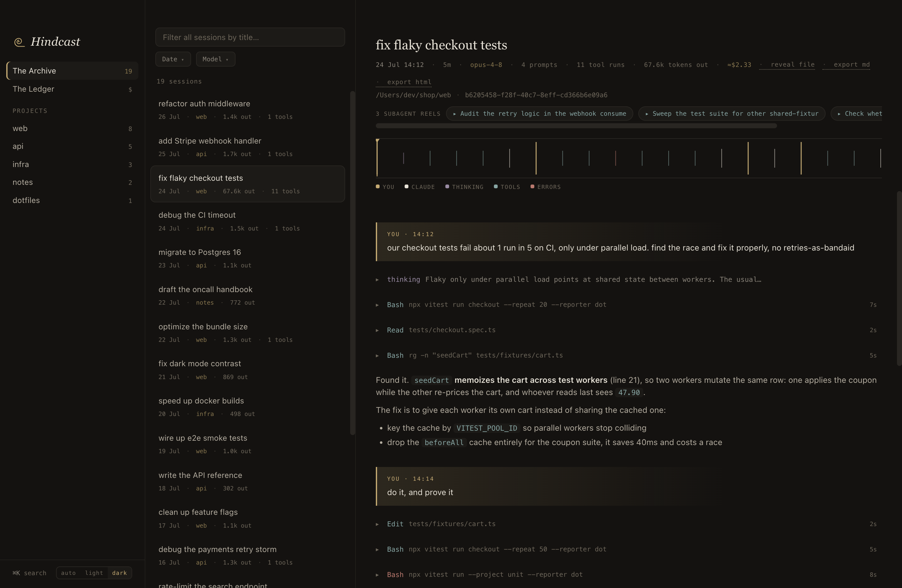

Every Claude Code session you've ever run.
Indexed, searchable, scrubbable.
Find that session from three weeks ago, scrub through what the agent did,
and resume it in your terminal with one paste. Local-first: it reads the transcripts
Claude Code already writes to ~/.claude/projects/, and nothing leaves your Mac.
brew tap karanb192/tap brew trust karanb192/tap brew install --cask hindcast xattr -rd com.apple.quarantine /Applications/Hindcast.app
Apple Silicon. The xattr line is a one-time step until the app is
notarized (Developer ID enrollment in progress). ripgrep comes along as a cask dependency;
if you grab the DMG instead, brew install ripgrep enables full-text search.
Claude Code deletes transcripts after 30 days by default
(cleanupPeriodDays in ~/.claude/settings.json).
Hindcast can only index what still exists, so raise it before the pruner gets to your history.
⌘K search across every transcript, tool output included; results jump the tape to the matched event.
Resume any session: one chip copies
cd + claude --resume, template editable for your aliases.The Ledger: usage and estimated cost per day, week, month, and model, deduplicated the way ccusage does it.
Read-only: no API keys, no network calls, no telemetry. It reads files on disk, and that's the whole trick.
